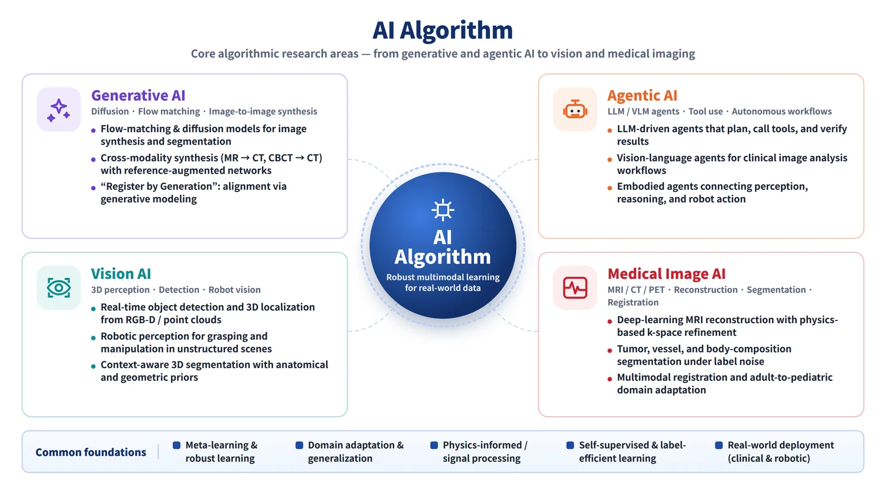
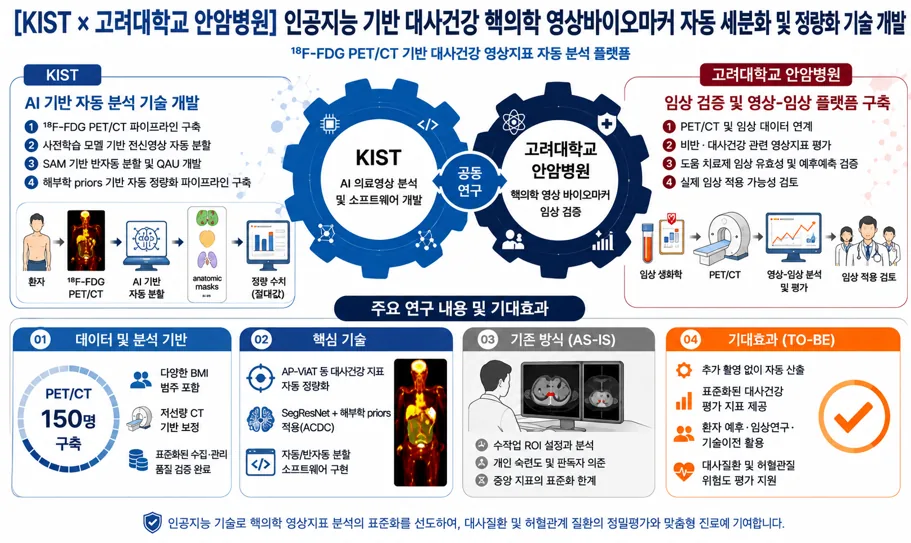
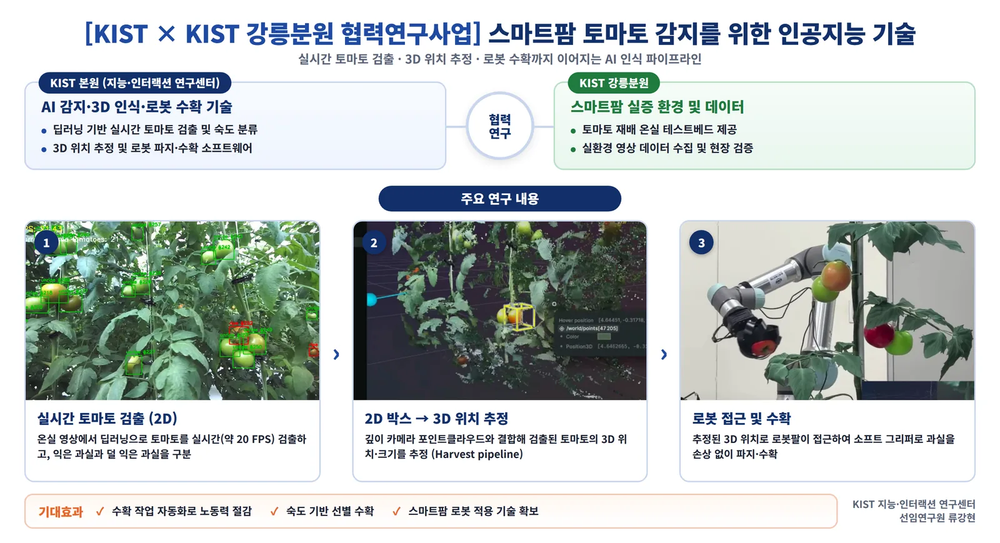
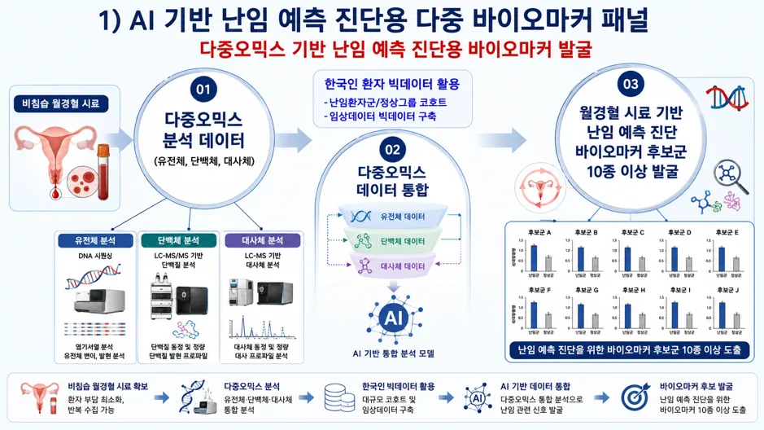

Core algorithmic research — generative AI, agentic AI, vision AI, and medical image AI for robust multimodal learning on real-world data.

Deep learning for medical image registration, segmentation, and reconstruction across MRI, CT, and PET modalities.

Real-time tomato detection, tracking, and remote control for smart-farm robotics — demonstrated at the Korea Science and Technology Festival.

AI-driven biomarker discovery and analysis from multi-modal medical imaging for precision healthcare.